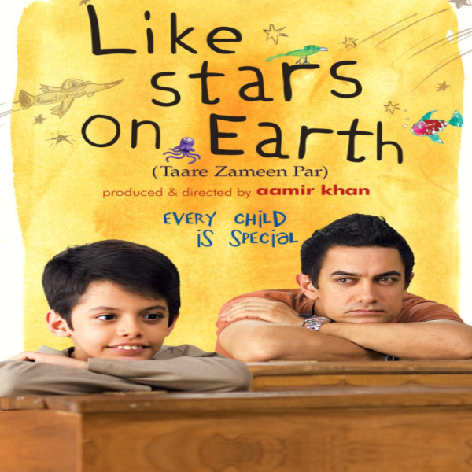

Choose How You Are Feeling
Select Mood, Start Watching

The Jane Austen Book Club
Six Californians start a club to discuss the works of Jane Austen, only to find their relationships -- both old and new -- begin to resemble 21st century versions of her novels.

Bridget Jones's Diary
Bridget Jones is determined to improve herself while she looks for love in a year in which she keeps a personal diary.

Love Actually
Follows the lives of eight very different couples in dealing with their love lives in various loosely interrelated tales all set during a frantic month before Christmas in London, England.
 Days of Summer.png)
(500) Days of Summer
An offbeat romantic comedy about a woman who doesn't believe true love exists, and the young man who falls for her.

Now and Then
Four 12-year-old girls grow up together during an eventful small-town summer in 1970.

Can't Buy Me Love
An outcast secretly pays the most popular girl in school one thousand dollars to pretend to be his girlfriend for a month.

Lost in Austen
Amanda, an ardent Jane Austen fan, lives in present day London with her boyfriend Michael, until she finds she's swapped places with Austen's fictional creation Elizabeth Bennet.

Midnight in Paris
While on a trip to Paris with his fiancée's family, a nostalgic screenwriter finds himself mysteriously going back to the 1920s every day at midnight.

We Bought a Zoo
Set in Southern California, a father moves his young family to the countryside to renovate and re-open a struggling zoo.

Requiem for a Dream
The drug-induced utopias of four Coney Island people are shattered when their addictions run deep.

Sophie's Choice
Sophie is the survivor of Nazi concentration camps, who has found a reason to live with Nathan, a sparkling if unsteady American Jew obsessed with the Holocaust.

Schindler's List
In German-occupied Poland during World War II, industrialist Oskar Schindler gradually becomes concerned for his Jewish workforce after witnessing their persecution by the Nazis.

Forrest Gump
The presidencies of Kennedy and Johnson, the Vietnam War, the Watergate scandal and other historical events unfold from the perspective of an Alabama man with an IQ of 75, whose only desire is to be reunited with his childhood sweetheart.
Philadelphia
When a man with HIV is fired by his law firm because of his condition, he hires a homophobic small time lawyer as the only willing advocate for a wrongful dismissal suit.

American History X
A former neo-nazi skinhead tries to prevent his younger brother from going down the same wrong path that he did.

Finding Neverland
The story of Sir J.M. Barrie's friendship with a family who inspired him to create Peter Pan.
Titanic
A seventeen-year-old aristocrat falls in love with a kind but poor artist aboard the luxurious, ill-fated R.M.S. Titanic.

The Notebook
A poor yet passionate young man falls in love with a rich young woman, giving her a sense of freedom, but they are soon separated because of their social differences.

Don't Look Up
Two low-level astronomers must go on a giant media tour to warn mankind of an approaching comet that will destroy planet Earth.
Ghostbusters: Afterlife
When a single mom and her two kids arrive in a small town, they begin to discover their connection to the original Ghostbusters and the secret legacy their grandfather left behind.

Single All the Way
Desperate to avoid his family's judgment about his perpetual single status, Peter convinces his best friend Nick to join him for the holidays and pretend that they're now in a relationship.
Encanto
A young Colombian girl has to face the frustration of being the only member of her family without magical powers.

Home Alone
An eight-year-old troublemaker must protect his house from a pair of burglars when he is accidentally left home alone by his family during Christmas vacation.

Licorice Pizza
The story of Alana Kane and Gary Valentine growing up, running around and going through the treacherous navigation of first love in the San Fernando Valley, 1973.

Red Notice
An Interpol agent tracks the world's most wanted art thief.

National Lampoon's Christmas Vacation
The Griswold family's plans for a big family Christmas predictably turn into a big disaster.

Silent Night
Nell, Simon, and their son Art are ready to welcome friends and family for what promises to be a perfect Christmas gathering. Perfect except for one thing: everyone is going to die.
Antlers
In an isolated Oregon town, a middle-school teacher and her sheriff brother become embroiled with her enigmatic student, whose dark secrets lead to terrifying encounters with an ancestral creature.

Last Night in Soho
An aspiring fashion designer is mysteriously able to enter the 1960s where she encounters a dazzling wannabe singer. But the glamour is not all it appears to be and the dreams of the past start to crack and splinter into something darker.

Silent Night
Nell, Simon, and their son Art are ready to welcome friends and family for what promises to be a perfect Christmas gathering. Perfect except for one thing: everyone is going to die.

Resident Evil: Welcome to Raccoon City
Set in 1998, this origin story explores the secrets of the mysterious Spencer Mansion and the ill-fated Raccoon City.
Scream
Twenty-five years after the original series of murders in Woodsboro, a new killer emerges, and Sidney Prescott must return to uncover the truth.
Old
A vacationing family discovers that the secluded beach where they're relaxing for a few hours is somehow causing them to age rapidly, reducing their entire lives into a single day.
Morbius
Biochemist Michael Morbius tries to cure himself of a rare blood disease, but he inadvertently infects himself with a form of vampirism instead.
Krampus
A boy who has a bad Christmas accidentally summons a festive demon to his family home.
Midsommar
A couple travels to Northern Europe to visit a rural hometown's fabled Swedish mid-summer festival. What begins as an idyllic retreat quickly devolves into an increasingly violent and bizarre competition at the hands of a pagan cult.

The Human Centipede (First Sequence)
A mad scientist kidnaps and mutilates a trio of tourists in order to reassemble them into a human centipede, created by stitching their mouths to each others' rectums.

Irréversible
Events over the course of one traumatic night in Paris unfold in reverse-chronological order as the beautiful Alex is brutally raped and beaten by a stranger in the underpass.

Cannibal Holocaust
During a rescue mission into the Amazon rainforest, a professor stumbles across lost film shot by a missing documentary crew.

The Exorcist
When a 12-year-old girl is possessed by a mysterious entity, her mother seeks the help of two priests to save her.

A Clockwork Orange
In the future, a sadistic gang leader is imprisoned and volunteers for a conduct-aversion experiment, but it doesn't go as planned.

Salò o le 120 giornate di Sodoma
In World War II Italy, four fascist libertines round up nine adolescent boys and girls and subject them to 120 days of physical, mental, and sexual torture.

Se7en
Two detectives, a rookie and a veteran, hunt a serial killer who uses the seven deadly sins as his motives.

The Last Temptation of Christ
The life of Jesus Christ, his journey through life as he faces the struggles all humans do, and his final temptation on the cross.

Rosemary's Baby
A young couple trying for a baby move into an aging, ornate apartment building on Central Park West, but find themselves surrounded by peculiar neighbors.

West Side Story
An adaptation of the 1957 musical, West Side Story explores forbidden love and the rivalry between the Jets and the Sharks, two teenage street gangs of different ethnic backgrounds.

The Power of the Dog
Charismatic rancher Phil Burbank inspires fear and awe in those around him. When his brother brings home a new wife and her son, Phil torments them until he finds himself exposed to the possibility of love.

The French Dispatch
A love letter to journalists set in an outpost of an American newspaper in a fictional twentieth century French city that brings to life a collection of stories published in "The French Dispatch Magazine".

The Lost City
A reclusive romance novelist on a book tour with her cover model gets swept up in a kidnapping attempt that lands them both in a cutthroat jungle adventure.
Licorice Pizza
The story of Alana Kane and Gary Valentine growing up, running around and going through the treacherous navigation of first love in the San Fernando Valley, 1973.
Single All the Way
Desperate to avoid his family's judgment about his perpetual single status, Peter convinces his best friend Nick to join him for the holidays and pretend that they're now in a relationship.

Love Actually
Follows the lives of eight very different couples in dealing with their love lives in various loosely interrelated tales all set during a frantic month before Christmas in London, England.

West Side Story
Two youngsters from rival New York City gangs fall in love, but tensions between their respective friends build toward tragedy.

Love Hard
An LA girl, unlucky in love, falls for an East Coast guy on a dating app and decides to surprise him for the holidays, only to discover that she's been catfished. This lighthearted romantic comedy chronicles her attempt to reel in love.

Wolf Creek
Three backpackers stranded in the Australian outback are plunged inside a hellish nightmare of insufferable torture by a sadistic psychopathic local.

Wolf Creek 2
The outback once more becomes a place of horror as another unwitting tourist becomes the prey for crazed, serial-killing pig-hunter Mick Taylor.

Haute Tension
Best friends Marie and Alexia decide to spend a quiet weekend at Alexia's parents' secluded farmhouse. But on the night of their arrival, the girls' idyllic getaway turns into an endless night of horror.

Toolbox Murders
A historic Hollywood hotel houses a supernatural evil. It's been subdued for decades, but when renovations start, a series of murders take place.

The Green Inferno
A group of student activists travels to the Amazon to save the rain forest and soon discover that they are not alone, and that no good deed goes unpunished.

Evil Dead
Five friends head to a remote cabin, where the discovery of a Book of the Dead leads them to unwittingly summon up demons living in the nearby woods.

Bound to Vengeance
A young girl, chained in the basement of a sexual predator, escapes and turns the tables on her captor.
Rest Stop
The film follows Nicole Carrow, a young woman who is threatened by a maniac serial killer, after her boyfriend Jess, is abducted in a rest stop.

Rest Stop: Don't Look Back
Three friends embark on a trip to track down Nicole and her boyfriend, and they quickly find out that the mystery is stranger and scarier than they imagined.

Fantastic Beasts: The Secrets of Dumbledore
The third installment of the 'Fantastic Beasts and Where to Find Them' series which follows the adventures of Newt Scamander.
Encanto
A young Colombian girl has to face the frustration of being the only member of her family without magical powers.
The Eternals
The saga of the Eternals, a race of immortal beings who lived on Earth and shaped its history and civilizations.
Ghostbusters: Afterlife
When a single mom and her two kids arrive in a small town, they begin to discover their connection to the original Ghostbusters and the secret legacy their grandfather left behind.

Shang-Chi and the Legend of the Ten Rings
Shang-Chi, the master of weaponry-based Kung Fu, is forced to confront his past after being drawn into the Ten Rings organization.

A Boy Called Christmas
In this origin story of Father Christmas, an ordinary boy (with a loyal pet mouse and a reindeer at his side) sets out on an extraordinary adventure to find his father who is on a quest to discover the fabled village of Elfhelm.

How the Grinch Stole Christmas
On the outskirts of Whoville lives a green, revenge-seeking Grinch who plans to ruin Christmas for all of the citizens of the town.
Elf
Raised as an over-sized elf, a human travels from the North Pole to NYC to meet his biological father who doesn't know he exists and is in desperate need of some Christmas spirit.

It's a Wonderful Life
An angel is sent from Heaven to help a desperately frustrated businessman by showing him what life would have been like if he had never existed.

Bitter Moon
After hearing stories of her, a passenger on a cruise ship develops an irresistible infatuation with an eccentric paraplegic's wife.

Basic Instinct
A violent police detective investigates a brutal murder that might involve a manipulative and seductive novelist.

The English Patient
At the close of World War II, a young nurse tends to a badly-burned plane crash victim. His past is shown in flashbacks, revealing an involvement in a fateful love affair.

The Unbearable Lightness of Being
Central Europe, 1968: A Czech doctor with an active sex life meets a woman who wants monogamy, and then the Soviet invasion further disrupts their lives.

The Roman Spring of Mrs. Stone
A failing star is faced with a lifestyle change when her rich husband suddenly dies while they are en route to Italy. She then sets off in a series of flings with gigolos found for her by an aging contessa. Each contact spirals further out of control until she becomes obsessed with one young man, who initially treats her well, but then with disdain.

Henry & June
Anaïs Nin meets the American writer, Henry Miller, in Paris in 1931. She keeps a diary of her sexual awakening which includes Henry and his wife, June.

Wild Orchid
A female lawyer becomes mesmerized by a self-made millionaire during an encounter in Rio setting off a series of erotic encounters.

Nine 1/2 Weeks
A woman becomes involved with a man she barely knows. Complications develop during their sexual escapades.
Malèna
Amidst the war climate, a teenage boy discovering himself becomes love-stricken by Malèna, a sensual woman living in a small, narrow-minded Italian town.
The Shawshank Redemption
Two imprisoned men bond over a number of years, finding solace and eventual redemption through acts of common decency.
Forrest Gump
The presidencies of Kennedy and Johnson, the Vietnam War, the Watergate scandal and other historical events unfold from the perspective of an Alabama man with an IQ of 75, whose only desire is to be reunited with his childhood sweetheart.
Schindler's List
In German-occupied Poland during World War II, industrialist Oskar Schindler gradually becomes concerned for his Jewish workforce after witnessing their persecution by the Nazis.

The Green Mile
The lives of guards on Death Row are affected by one of their charges: a black man accused of child murder and rape, yet who has a mysterious gift.
Whiplash
A promising young drummer enrolls at a cut-throat music conservatory where his dreams of greatness are mentored by an instructor who will stop at nothing to realize a student's potential.

The Social Network
As Harvard student Mark Zuckerberg creates the social networking site that would become known as Facebook, he is sued by the twins who claimed he stole their idea, and by the co-founder who was later squeezed out of the business.

The Pursuit of Happyness
A struggling salesman takes custody of his son as he's poised to begin a life-changing professional career.

Scent of a Woman
A prep school student needing money agrees to "babysit" a blind man, but the job is not at all what he anticipated.

Cast Away
A FedEx executive undergoes a physical and emotional transformation after crash landing on a deserted island.